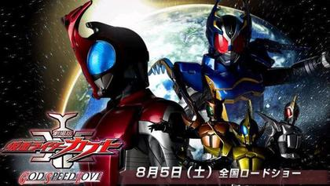

REVIEW
Misael Tavarez: April 21, 2026
It takes place in an alternative universe where the monsters when arrived turned the world into a wasteland that uses money as currency. I loved the coloring of this movie, giving the wastlenad a dry dead look and cites a cold empty appearnce. The fight scenes where amazing due to the shows focus on super speed, which the movei follows. Of course the best part was seeing Soji Tendo act cool and do cool shit, like reverse time. I would give this movie a 9/10 jsut shy of a ten becasue I didn't like the new suits for the two villan riders.
